Benchmark / Use cases / Cloud top height / Results / T33XVH-20200412
T33XVH-20200412
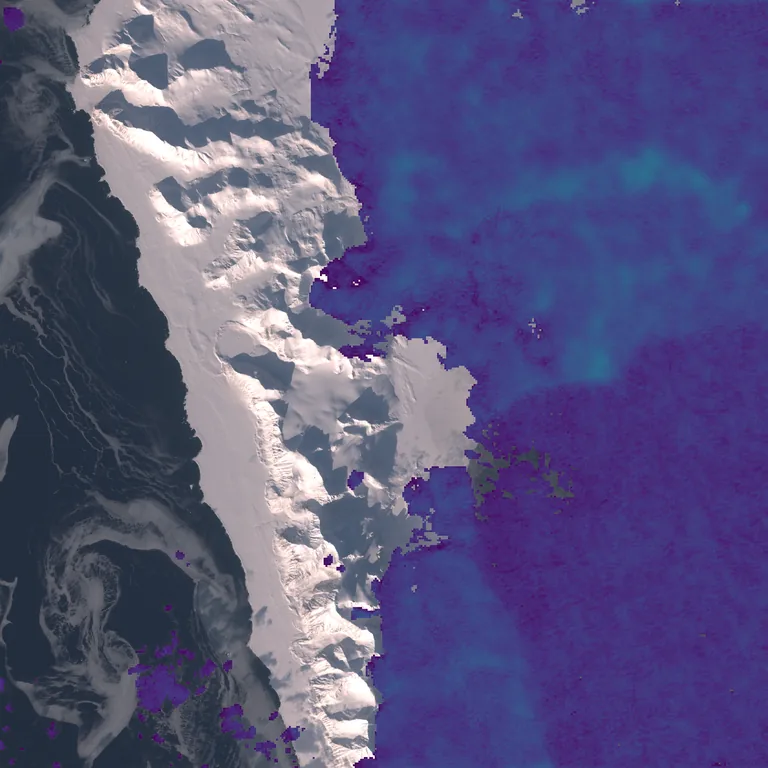
Cloud top height retrieved by Clouds Decoded, from 0 km in purple to 15 km in yellow, over the true-colour crop.
Sample
| surface | land |
|---|---|
| regime | snow, sea ice |
| product | S2A_MSIL1C_20200412T130711_N0500_R081_T33XVH_20230418T033917 |
| col_off | 0 |
| row_off | 4740 |
Compression ratio and cloud top height
Each point is one level of a codec, named when you point at it, on this sample.
GeoZL PIVCOGeoZL PFORJPEG XLgeorvq
Change in cloud top height
GeoZL PIVCO

3.6× · cth_mae +8.852

4.5× · cth_mae +16.593

6.1× · cth_mae +33.156

8.3× · cth_mae +80.417
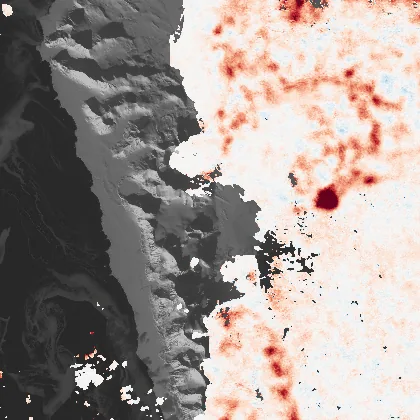
10.5× · cth_mae +387.433
GeoZL PFOR
3.2× · cth_mae +8.852
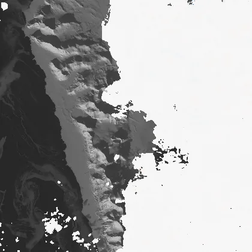
3.8× · cth_mae +16.593
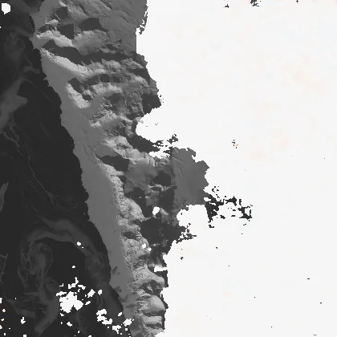
4.8× · cth_mae +33.156
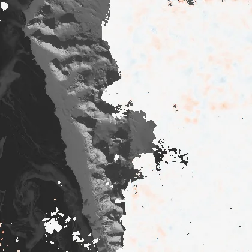
5.9× · cth_mae +80.417

6.9× · cth_mae +387.433
JPEG XL
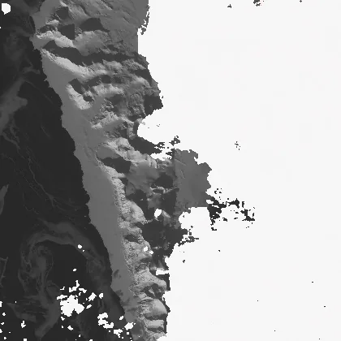
3.5× · cth_mae +6.015
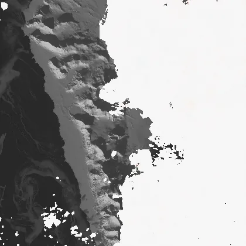
4.7× · cth_mae +12.267
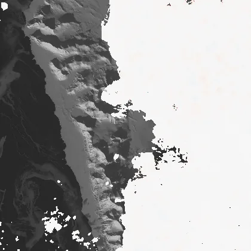
7.0× · cth_mae +26.125
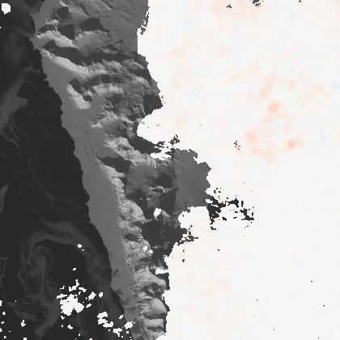
12.8× · cth_mae +71.533
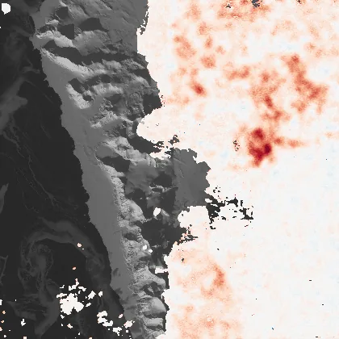
30.2× · cth_mae +313.986
georvq
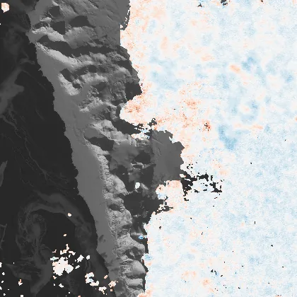
287.3× · cth_mae +265.876
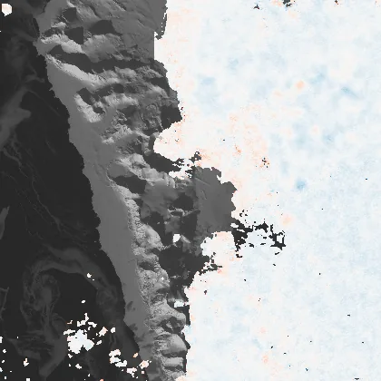
132.9× · cth_mae +186.488
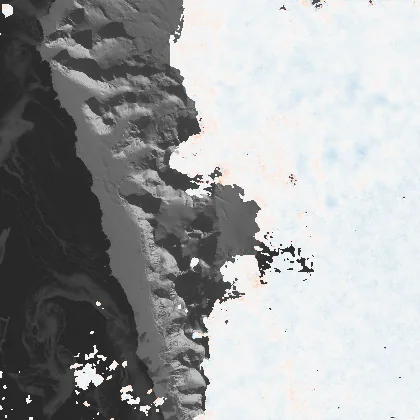
86.5× · cth_mae +150.711
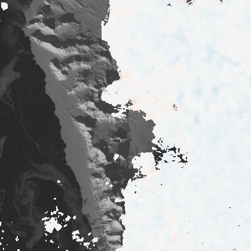
64.1× · cth_mae +127.444
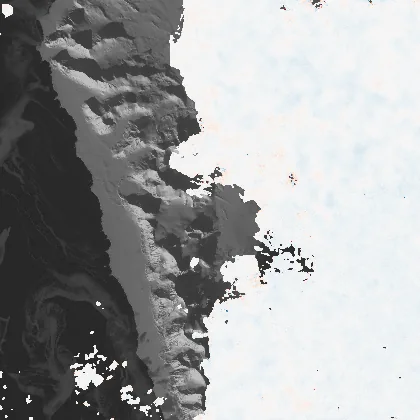
50.9× · cth_mae +113.105
42.2× · cth_mae +103.610
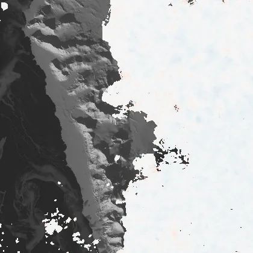
36.1× · cth_mae +96.990
31.5× · cth_mae +90.059
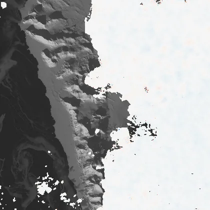
27.9× · cth_mae +85.069